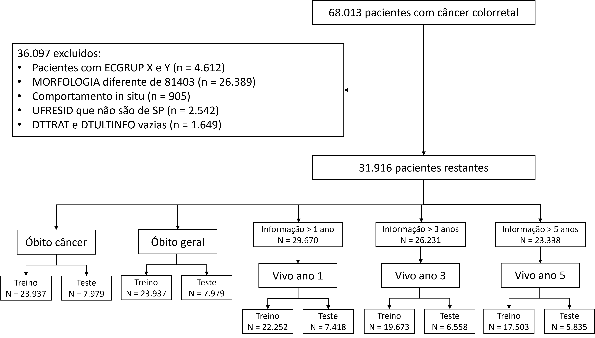

Documentação do estudo com pacientes de câncer colorretal
Autores
Gisele Fernandes - Grupo de Epidemiologia e Estatística do Câncer, Centro Internacional de Pesquisa, A.C. Camargo Cancer Center
Lucas Buk Cardoso - Núcleo de Sistemas Eletrônicos Embarcados, Instituto Mauá de Tecnologia
Maria Paula Curado - Grupo de Epidemiologia e Estatística do Câncer, Centro Internacional de Pesquisa, A.C. Camargo Cancer Center
Stela Verzinhasse Peres - Diretora de Informação e Epidemiologia, Fundação Oncocentro de São Paulo
Tatiana Natasha Toporcov - Departamento de Epidemiologia, Faculdade de Saúde Pública, Universidade de São Paulo
Vanderlei Cunha Parro - Núcleo de Sistemas Eletrônicos Embarcados, Instituto Mauá de Tecnologia
Introdução
A seguir está apresentada a documentação do estudo de pacientes com câncer colorretal desenvolvido pelo Intituto Mauá de Tecnologia, em parceria com a FOSP (Fundação Oncocentro de São Paulo), Faculdade de Saúde Pública da USP (Universidade de São Paulo) e A.C. Camargo Cancer Center.
O projeto visa a utilização de algoritmos de aprendizado de máquina para realizar previsões e identificar as variáveis mais importantes no óbito e na sobrevida de pacientes com câncer colorretal, residentes no estado de São Paulo.
O conjunto de dados utilizado é aberto, chamado Registro Hospilar de Câncer (RHC), e está disponível no site da FOSP. Desses dados foram selecionados pacientes com câncer colorretal tratados entre 2000 e 2021.
Sumário
A documentação será dividida em tópicos para facilitar o entendimento e organização. São elas:
Bibliotecas, instalações e funções - Todas as bibliotecas que foram utilizadas no projeto e as funções criadas para utilização no projeto.
Análise dos dados, criação de novas colunas e primeiro pré-processamento - Exploração do conjunto de dados, limpeza e primeira preparação das colunas.
Classificação - pré-processamento completo dos dados, treinamento e validação dos modelos de machine learning. Os labels das análises são:
obito_geral: 0 se paciente está vivo e 1 se morreu por qualquer razão;
obito_cancer: 0 se paciente está vivo e 1 se morreu devido ao câncer;
vivo_ano1: 0 se paciente não sobreviveu e 1 se sobreviveu ao primeiro ano após diagnóstico;
vivo_ano3: 0 se paciente não sobreviveu e 1 se sobreviveu ao terceiro ano após diagnóstico;
vivo_ano5: 0 se paciente não sobreviveu e 1 se sobreviveu ao quinto ano após diagnóstico.
Note
As análises de sobrevida (vivo ano 1, 3 e 5) exigem uma filtragem a mais dos dados, pois é necessário garantir que o paciente tenha sido acompanhado pelo período de interesse da análise. Por exemplo, para a análise de sobrevida de 3 anos, o paciente que está vivo precisa ter sido acompanhado por pelo menos 3 anos após o diagnóstico da doença.
A imagem abaixo mostra as seleções feitas no conjunto de dados, chegando no número de pacientes utilizado em cada uma das análises.
{kind=link}
Os códigos completos estão disponíveis em Github.
Bibliotecas e Funções
Análise dos dados
Óbito geral
Óbito por câncer
Sobrevida um ano
Sobrevida três anos